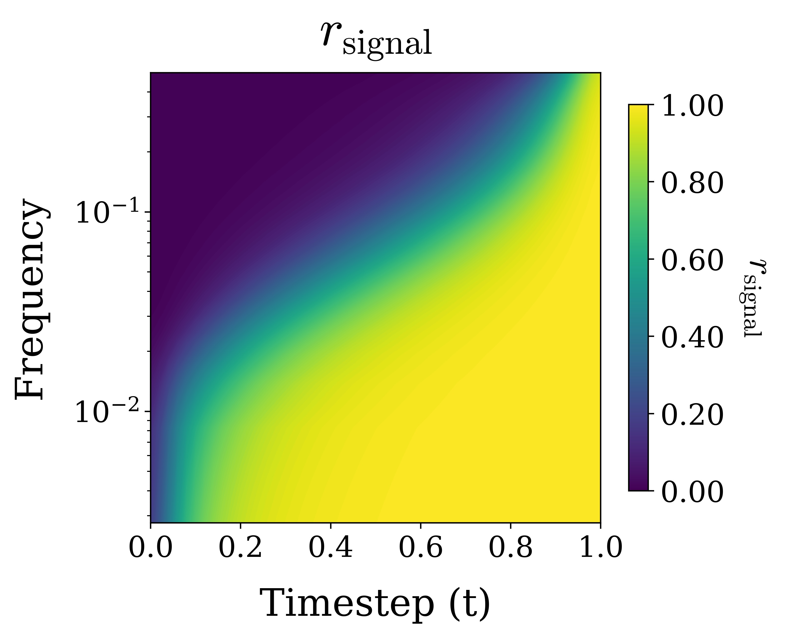
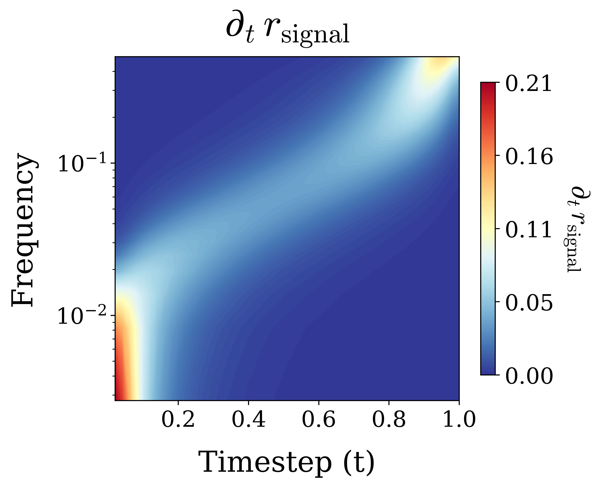
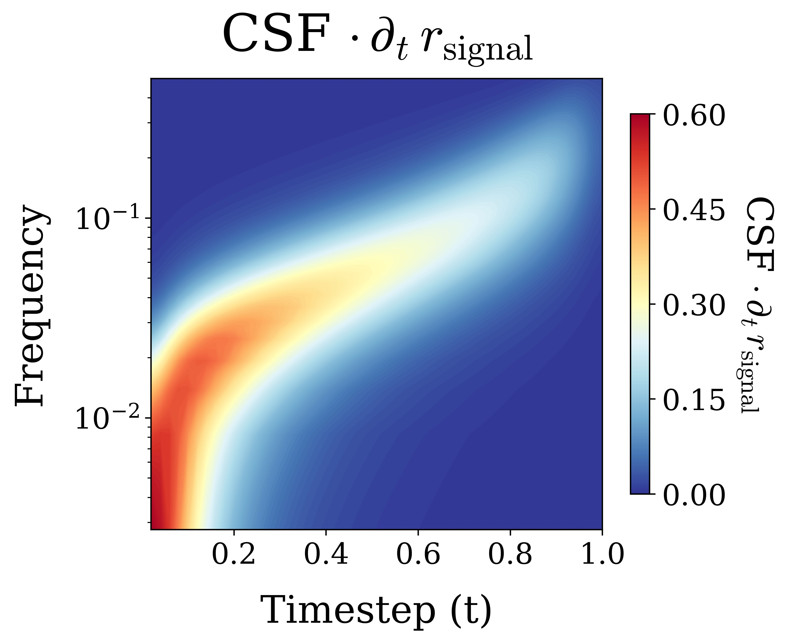
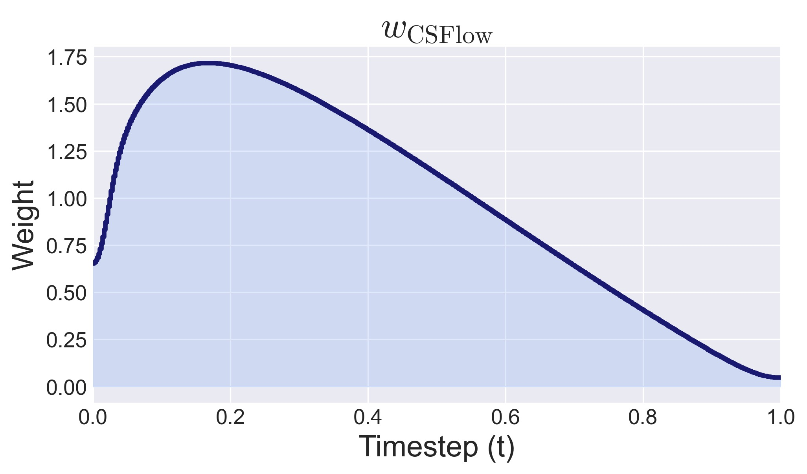

Aligning Flow Matching with Human Contrast Sensitivity
Max Planck Institute for Informatics, Saarland Informatics Campus
* Equal contribution
We introduce Contrast Sensitive Flow (CSFlow), a weighting scheme method that prioritizes generation stages that reconstruct spatial frequencies important for the human visual system. We combine two properties: first, that image generation happens in a coarse-to-fine manner, which can be measured through frequency analysis; and second, that the human eye is more sensitive to certain frequency bands. We redistribute several models' precision and capacity accordingly through a weighted inference and fine-tuning. The results: consistently better quantitative results (FID, GenEval) and images that look less flat, "cartoonish" and oversmoothed, and achieve overall better realism.
CSFlow connects the human eye’s Contrast Sensitivity Function (CSF) to the iterative denoising steps of Flow matching. Because real-world images concentrate signal at low spatial frequencies, these components reach high signal-to-noise ratio earlier during continuous diffusion than high-frequency components. When generating images with diffusion or flow matching models, this induces a soft autoregressive structure in Fourier space, where coarse image content stabilizes before fine detail. Meanwhile, the human visual system is unequally sensitive to spatial frequencies: very low and very high frequencies require significantly higher contrast to be perceived. We for the first time merge these observations through two contributions: (1) a metric that estimates which frequencies are generated at each reverse flow interval and (2) timestep weights obtained by aligning the frequencies generated at each noise level with human contrast sensitivity. We validate our contributions experimentally showing that these weights can improve generative performance by lowering FID by up to 12.1%, increasing Inception Score by 2.2% and improving GenEval scores by 2.8% using inference-only timestep modification or short fine-tuning. Qualitatively, we find that our CSFlow weights lead to better visual realism and less cartoonish appearance of generated images.
Depending on the viewing distance and screen properties, your ability to see certain frequencies changes, which is exactly what CSF measures. This is a Campbell–Robson chart — spatial frequency increases left→right, contrast fades top→bottom. The dashed line is the predicted human visibility threshold: adjust viewing distance and pixel size and watch it shift, computed from the real Barten CSF (Appendix A) and the pixel-to-degree conversion in Appendix D.
Move further from the screen, or shrink the pixels (higher DPI), and the same image frequencies map to higher cycles-per-degree — the threshold curve shifts left, toward coarser image content.
CSFlow is built in four steps: measure how recoverable each frequency is during generation, measure what is newly generated at each step, weight it by contrast sensitivity, then aggregate the resulting timestep weights.
In the plots, we use at = t and bt = 1-t, therefore, t = 0 corresponds to pure noise and t = 1 corresponds to the clean image.
For a noisy image at time t, we measure the fraction of each frequency's power that comes from the clean image rather than the noise. Near 0, all frequencies are noise-dominated; near 1, most are already settled and won't change much further with continued denoising.
Closed-form retained signal — a normalized SNR per frequency, per timestep.

Retained signal alone only says how "done" a frequency is — not what's changing. So we take the stepwise increase in retained signal over an interval [t, t+Δt] (or its continuous form, ∂ₜr). This is the amount of newly recoverable frequency content at that point in denoising — the true measure of what the model is generating right now.
Stepwise information gain — how much of frequency f becomes newly recoverable over [t, t+Δt].

We combine the newly recoverable content at each step with the Contrast Sensitivity Function. This emphasizes frequency bands that are most visible to people.
CSF-weighted newly recoverable frequency content.

We average the CSF-weighted frequency content over each timestep and normalize across the trajectory. Intervals with more perceptually important content later receive more finetuning attention or a denser inference grid.
Final perceptual timestep weights.

At inference, the resulting weights reshape the timestep grid — we allocate smaller steps where perceptually important frequencies emerge. In training, we bias which noise levels get sampled more often.
We evaluate on pixel-space flow matching models — PixelGen, PixelREPA and JiT. We compare our method to two other perceptual weighting methods: P2 and MinSNR, adapted to our setup. For CSFlow, both inference-only reweighting and weighted fine-tuning help independently, and best when combined.
| Model Variant | Overall ↑ |
|---|---|
| PixelGen-XXL/16 | |
| Baseline (timeshift 3.0) | 0.791 ± 0.0018 |
| Baseline (uniform) | 0.791 ± 0.0041 |
| Baseline finetuning | 0.789 ± 0.0024 |
| + P2 inference | 0.783 ± 0.0049 |
| + P2 finetuning | 0.809 ± 0.0031 |
| + P2 finetuning + inference | 0.806 ± 0.0005 |
| + MinSNR inference | 0.786 ± 0.0005 |
| + MinSNR finetuning | 0.786 ± 0.0011 |
| + MinSNR finetuning + inference | 0.758 ± 0.0026 |
| + Our inference | 0.798 ± 0.0025 |
| + Our finetuning | 0.810 ± 0.0004 |
| + Our finetuning + inference | 0.797 ± 0.0011 |
| Model Variant | α₁ | α₂ | Overall ↑ |
|---|---|---|---|
| PixelGen-XXL/16 | |||
| Baseline (timeshift 3.0) | – | – | 0.791 ± 0.0018 |
| Baseline (uniform) | – | – | 0.791 ± 0.0041 |
| Baseline finetuning | – | – | 0.789 ± 0.0024 |
| + P2 inference | – | 0.7 | 0.792 ± 0.0040 |
| + MinSNR inference | – | 0.4 | 0.788 ± 0.0048 |
| + MinSNR finetuning + inference | 1.0 | 0.7 | 0.788 ± 0.0013 |
| + Our finetuning + inference | 0.8 | 0.7 | 0.813 ± 0.0022 |
| Model Variant | α₂ | FID ↓ | IS ↑ |
|---|---|---|---|
| PixelREPA-H/16 | |||
| Baseline (uniform) | – | 1.81 ± 0.015 | 316.6 ± 1.15 |
| + P2 inference | 0.5 | 1.62 ± 0.004 | 316.7 ± 2.34 |
| + MinSNR inference | 0.4 | 1.68 ± 0.009 | 320.9 ± 0.65 |
| + Our inference | 0.5 | 1.59 ± 0.005 | 320.8 ± 2.33 |
| JiT-H/16 | |||
| Baseline | – | 1.89 ± 0.011 | 297.2 ± 1.70 |
| + P2 inference | 0.3 | 1.84 ± 0.011 | 297.4 ± 1.76 |
| + MinSNR inference | 0.3 | 1.84 ± 0.011 | 302.6 ± 0.86 |
| + Our inference | 0.4 | 1.80 ± 0.010 | 299.7 ± 1.79 |
The paper reports the best α₂ for each method. Blue rows mark CSFlow; bold values are the best metric within each model block.
Used in the paper teaser video (0:27-0:36).
@misc{csflow2026, title={CSFlow: Aligning Flow Matching with Human Contrast Sensitivity}, author={Malgorzata Galinska and Bart Pogodzinski and Jan Eric Lenssen}, year={2026}, url={https://arxiv.org/abs/2606.08833}, }